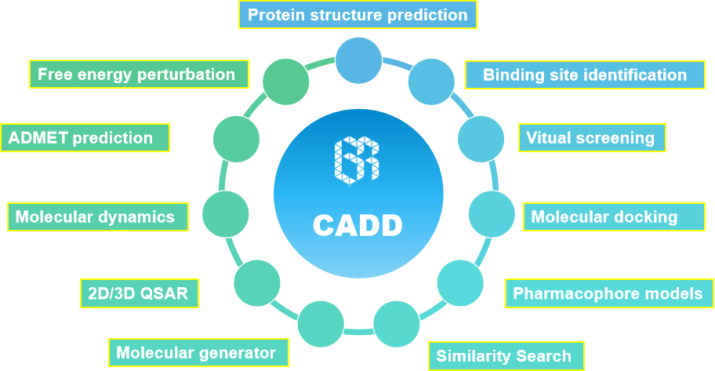
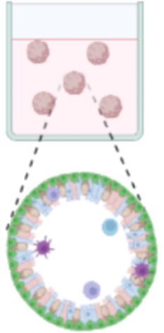

01 企业简介 · Company Profile
思诺达生物医药（Sinotar Biopharm Limited）实行香港、深圳双总部架构，入驻港深科创园（HSITP）。企业深度联动高水平科研院校，聚焦肿瘤精准治疗赛道，持续推进创新药物研发与转化。
公司独创 AI 赋能小分子药物研发 + 患者源肿瘤类器官双核心研发体系，聚焦耐药恶性肿瘤临床未满足用药缺口。依托 AI 高通量靶点挖掘技术与个体化肿瘤类器官药效评价技术，打通「靶点发现 — 先导化合物优化 — 体外药效验证 — 伴随诊断开发」全链条，自主布局多款具备完整知识产权的临床前候选新药，同步搭建智能化伴随诊断平台，实现靶向新药 + 配套诊断试剂协同研发。
Sinotar is a Hong Kong-based innovative biotech company settled in HSITP, concentrating on cutting-edge precision oncology research against drug-resistant cancers. We establish an exclusive dual-core R&D system combining AI-powered small-molecule drug design and patient-derived tumor organoid assessment to resolve critical clinical bottlenecks of refractory malignant tumors. Supported by high-throughput AI target identification and personalized organoid-based efficacy screening, we have built a full industrial pipeline covering novel target discovery, lead compound optimization, preclinical validation and companion diagnostic development. Multiple preclinical novel drug candidates with independent IP rights are under in-house development. Our self-developed AI companion diagnostic platform enables synergistic R&D of targeted therapeutics and matched diagnostic kits.
02 两大核心研发平台 · Core R&D Platforms
AI 智能体小分子药物设计平台
利用 AI Agent 高通量筛选全新致病靶点，智能定向设计、迭代优化先导化合物，大幅缩短新药早期研发周期，规避传统药物研发高失败率痛点。所有候选化合物均为公司自主专利布局。
Our AI platform screens novel pathogenic targets via high-throughput computational modeling and optimizes lead compounds with rational molecular design, drastically shortening preclinical R&D cycle. All candidate molecules are protected by self-owned intellectual property.

患者源肿瘤类器官药效评测平台
采用临床病人原代肿瘤样本构建活体类器官模型，复刻肿瘤真实病理特征，精准完成候选药物体外药效、耐药性筛选，弥补传统细胞、动物模型和临床药效差异过大的行业短板。
Patient-derived tumor organoids are cultured from primary clinical tumor specimens to mimic in-vivo tumor pathology, delivering reliable efficacy & drug-resistance evaluation for preclinical candidates and overcoming defects of conventional cell/animal testing models.

03 在研产品目录 · Product Catalogue
| No. | Project Code | Indication 适应症 | R&D Stage 研发阶段 | Core Advantage 产品亮点 |
|---|---|---|---|---|
| 1 | SIN-001 | 胰腺癌、乳腺癌、肺腺癌、卵巢癌、子宫内膜癌、宫颈癌、结直肠癌 | PPC (IND-enabling study) |
Inhibit multi-oncogenic signaling downstream node；Higher specificity and lower off-target toxicity；Broad indications |
| 2 | SIN-002 | 胃腺癌、乳腺癌、肺腺癌、结直肠癌、肝细胞癌、胰腺癌 | PPC | Inhibit multi-oncogenic signaling downstream node；Higher specificity and lower off-target toxicity；Broad indications |
| 3 | SIN-003 | 肺腺癌、乳腺癌、肝细胞癌 | Preclinical validation | Inhibit multi-oncogenic signaling downstream node；Higher specificity and lower off-target toxicity；Broad indications |
04 全链条 CRO 技术服务 · Technical Service
依托 PharmaTrace 平台三段式研发架构（靶点发现 → 苗头化合物筛选 → 临床前评价），对外开放三大模块化定制研发服务。
肿瘤靶点筛选验证
基于 TCGA、GEO、单细胞多组学数据库以及自测数据库开展肿瘤靶点大数据挖掘、预后分析；虚拟基因扰动验证；配套细胞功能实验、组织芯片、动物体内建模，一站式完成新靶点发现与成药性验证。
服务对象：药企、高校实验室AI 小分子筛选优化 CRO
依托蛋白数据库以及 AlphaFold3 完成靶蛋白结构解析，对千万级商用化合物库开展多算法 AI 高通量虚拟筛选；定向优化分子骨架、预测 ADMET 成药属性，后续体外细胞 / 生化筛选，快速产出高活性 Hit 与先导化合物。
服务对象：创新药企业、研发公司PDO 肿瘤类器官药效评价
体外靶点结合实验、药效 IC50 检测；独家 PDO 原代肿瘤类器官药敏筛选，高度复刻患者体内肿瘤特征；配套 PDX 体内抗肿瘤药效、DMPK 药代、hERG/Ames 安全毒理全项评价。
服务对象：CRO 机构、新药研发单位基因编辑自发成瘤小鼠模型与体内药效评价
利用转基因、基因敲除等基因编辑技术构建自发性肿瘤小鼠模型，建立鼠源 PDC、PDX、类器官等四大创新平台，已建立 80 余种小鼠模型（覆盖肝癌、肺癌、胰腺癌、大肠癌、卵巢癌、淋巴瘤等），配套体内抗肿瘤药效评价、候选药物筛选、致癌物检测。
服务对象：药企、CRO 机构、科研院所合作模式
按需选购任意单一技术模块
靶点立项直至临床前候选药物交付一站式打包研发
Target Discovery: Multi-omics data mining + in silico & in vitro/in vivo target validation · AI Small-molecule Discovery: Protein modeling, virtual screening, lead optimization & HTS validation · Preclinical Pharmacology: PDO organoid-based efficacy test, PDX in-vivo study & full safety/DMPK profiling · Animal Model Platform: Gene-edited spontaneous tumor mouse models (80+ models), integrated with PDC, PDX and organoid platforms.
| 编号 | 服务代码 | 服务项目 | 服务对象 |
|---|---|---|---|
| S1 | SSER01 | 肿瘤靶点筛选验证 | 药企、高校实验室 |
| S2 | SSER02 | AI 小分子筛选优化 CRO | 创新药企业、研发公司 |
| S3 | SSER03 | PDO 肿瘤类器官药效评价 | CRO 机构、新药研发单位 |
| S4 | S-SER04 | 基因编辑自发成瘤小鼠模型与体内药效评价 | 药企、CRO 机构、科研院所 |
05 技术平台与企业愿景 · Platform & Vision
PharmaTrace 智药寻踪一体化研发平台
平台划分为靶点研究、苗头化合物研发、临床前评价三大标准化模块，整合生信大数据、AI 计算化学、原代类器官培养、体内药理全套尖端技术，既是公司自研新药的核心载体，也是对外 CRO 技术服务的硬件支撑。
Divided into Target Research, Hit Discovery and Preclinical Assessment, the integrated platform combines bioinformatics, AI computational chemistry, patient-derived organoid culture and in-vivo pharmacology to support both internal drug R&D and external CRO business.
企业愿景 · Corporate Vision
立足港深生物医药产业高地，以 AI + 类器官前沿技术打破抗肿瘤新药研发瓶颈，一边自研老百姓用得起的原研靶向新药，一边以开放的技术服务助力全球生物医药产业提速，成长为亚太地区特色鲜明的肿瘤精准药物研发龙头企业。
Rooted in the Hong Kong-Shenzhen biotech cluster, Sinotar aims to overcome core barriers in anti-tumor drug discovery via AI and organoid technology. We strive to develop affordable innovative targeted drugs while accelerating global biotech progress through professional technical services, evolving into a leading precision oncology R&D enterprise across Asia-Pacific.